Starting a search
Use the top Quick Access controls to open Options, the Search Window, or both. Select a group and search type, enter a query, then choose a consolidated page or individual tabs.
The engine checklist is expanded by default. Its per-section All Sub-Group Engines controls select or clear only compatible engines in that section. Temporary search selections do not change group defaults unless you explicitly save them.
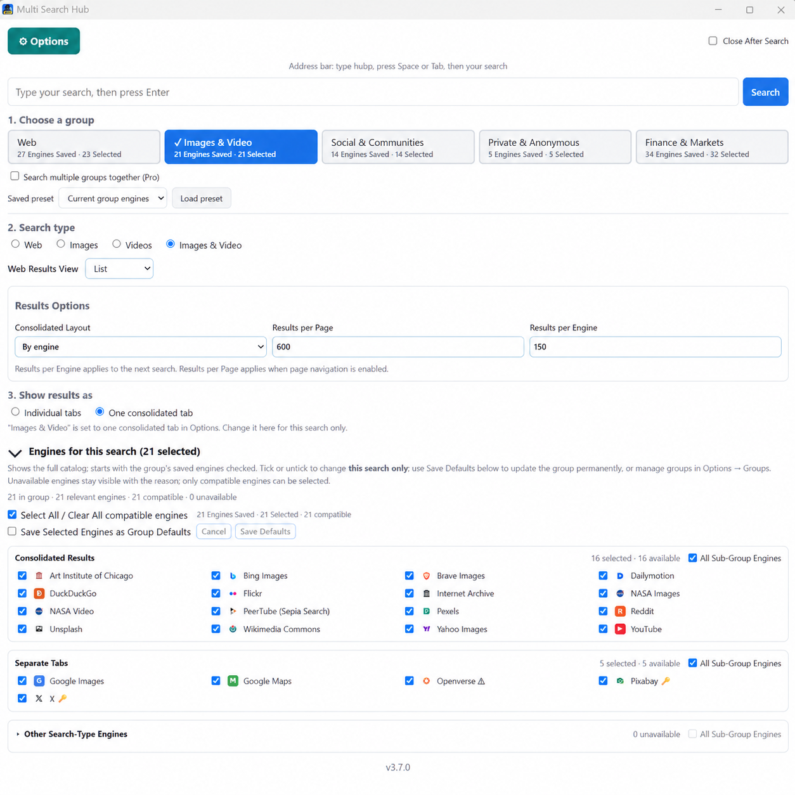
Groups, presets, and Multi-Group Search
Options → Groups opens the Group Manager. Select Manage to access Group Settings, Saved Engine Presets, and Search Engines. Each group retains its own selections and named presets.
Pro can save up to five named presets per group and combine multiple groups in one search. The Web group is the general catalog; specialized groups focus on media, privacy, community, or Finance sources.
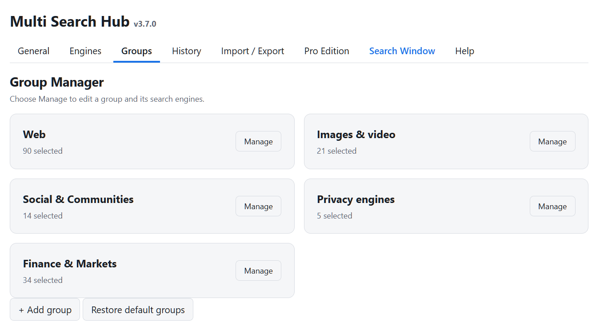
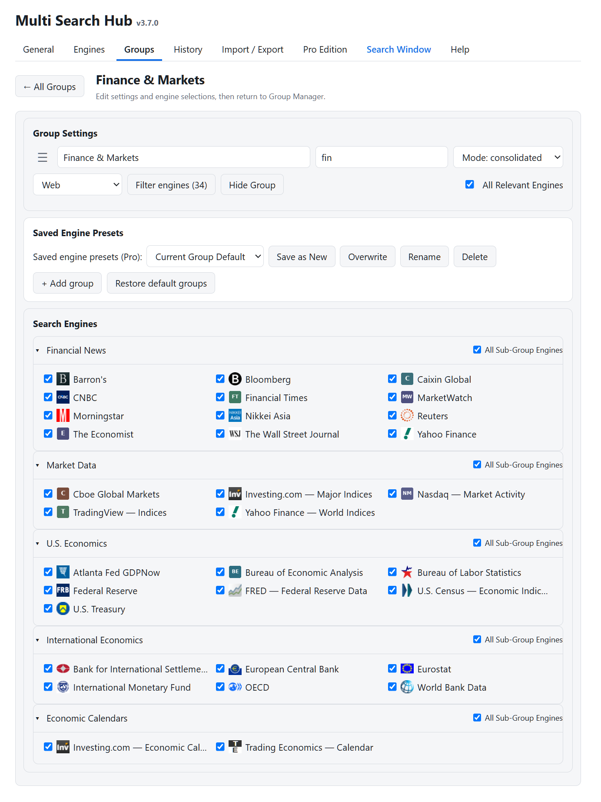
Consolidated results and external sources
Web results can be organized By Engine, By Group where available, or Combined with de-duplication. List/Cards controls affect presentation without changing the selected engines.
For Finance, results marked via Bing are Bing-indexed, publisher-domain-validated results, not native publisher APIs. Other sources appear in a manual External Sources checklist; none open automatically.
Pro supports higher configurable results limits, but the number actually returned depends on each provider and deduplication.
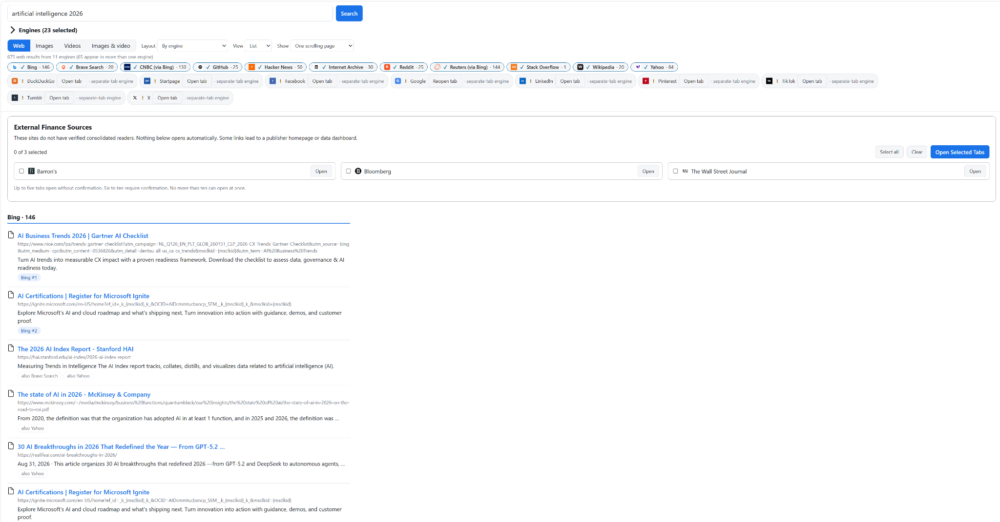
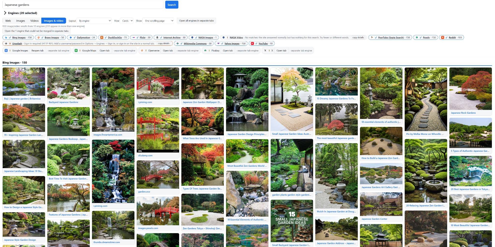
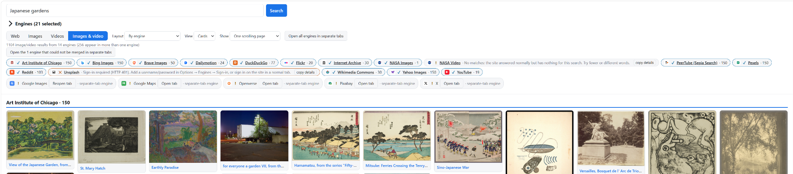
Managing engines
The Engines tab uses an alphabetical two-column directory with letter dividers. Filter by name, keyword, or URL and choose Edit to open the full-width configuration panel.
Pro can add custom engines and configure their search URLs, result parsers, icons, and optional sign-ins. Sites blocking scripted retrieval should use external opening rather than a misleading consolidated reader.
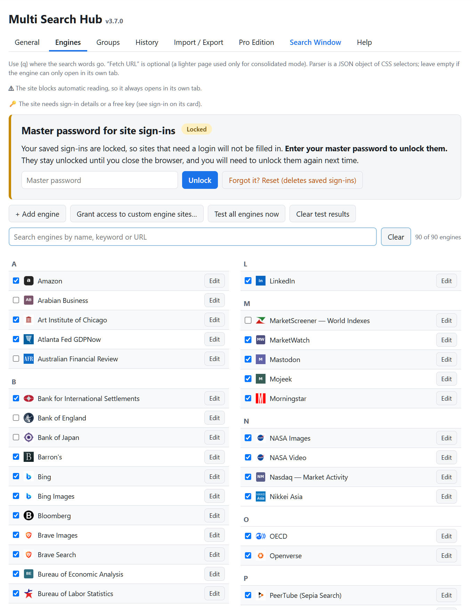
History and Recently Deleted
Pro saves recent searches locally when Remember My Searches is enabled. The Recent section in the Search Window can be expanded or collapsed. Search history can be filtered and deleted in Options.
Deleted items may be restored through Recently Deleted. Restore All and Delete All require confirmation. The screenshot below shows an empty fresh history; it is not an illustration of populated search entries.
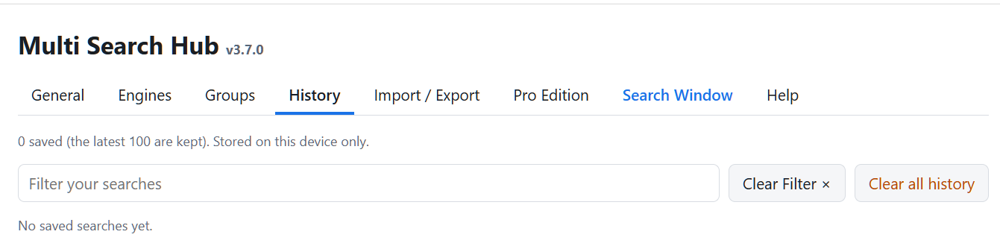
Import, export, and recovery
Download a JSON settings backup from Import / Export. Keep it securely, especially if you include an encrypted sign-in backup. Test imports using a safe separate profile before replacing your live settings.
Custom engine quick-add accepts one source per line. Restore App Defaults can reset settings; use it only when intentionally resetting your configuration.
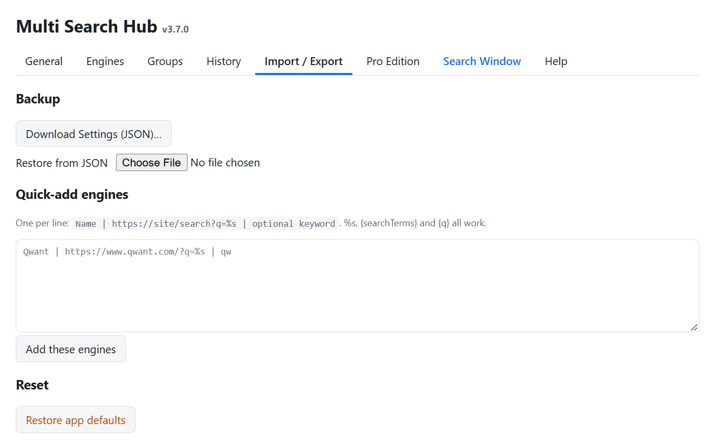
Pro activation and transfer
The Pro Edition tab displays current activation status and licensing information. If you move to another computer, use the provided deactivation process before transferring the license.
Never publish screenshots containing a license key, encrypted backup, or saved website passwords.
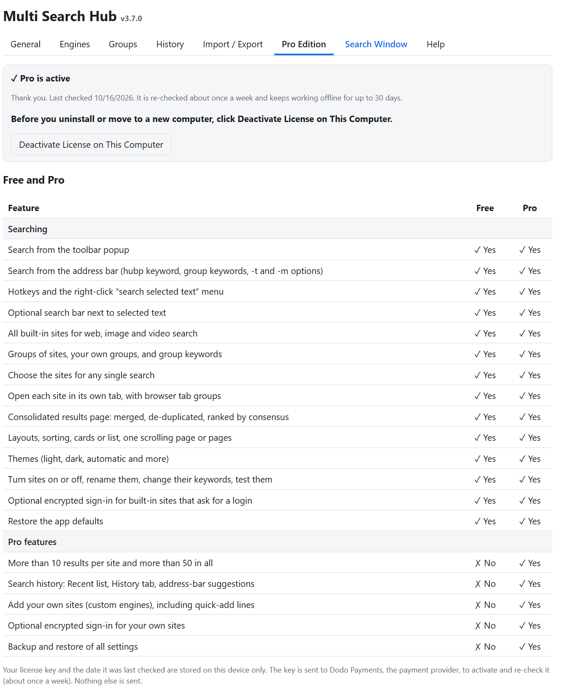
Shortcuts and support
The Options navigation includes a Search Window action; the top toolbar also provides Options, Search Window, and Open Options + Search Window.
Address-bar keyword: hubp in the Chrome release candidate. Shortcut keys and syntax are explained on the Help tab.
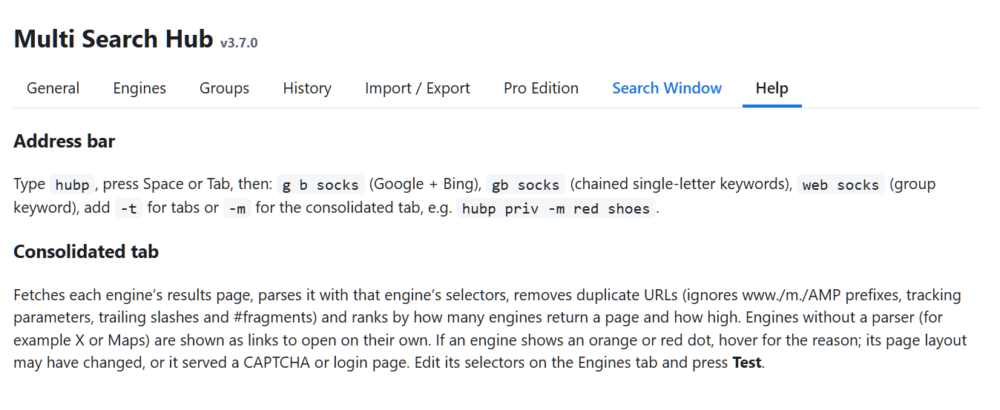